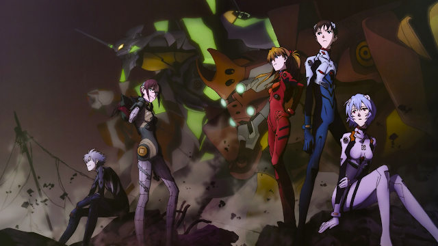
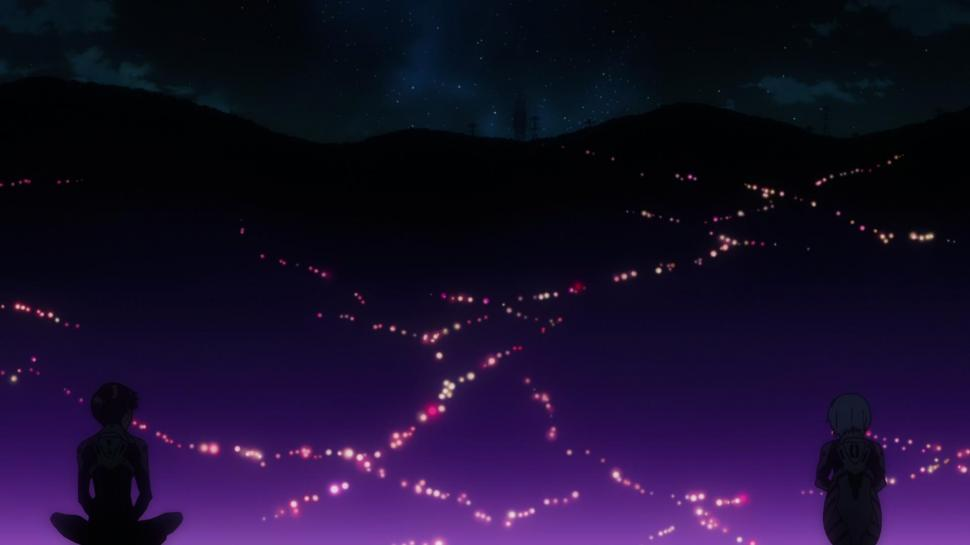
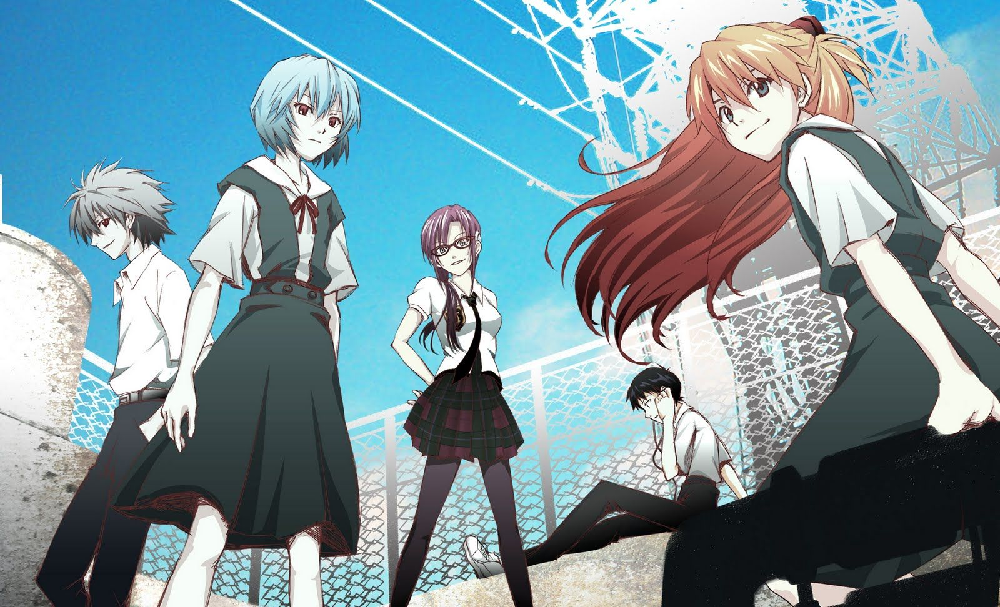
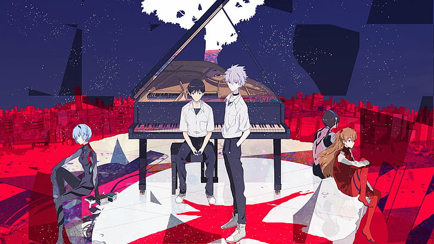

Rebuild Evangelion

Una historia que se repite nuevamente, como mencionan en SEELE: "el ser humano esta condenado a cometer siempre los mismos errores del pasado". Esta vez sera diferente. No seguira el mismo circulo ... lo rompera.
Evangelion: 1.11 You Are (Not) Alone

La historia comienza de la misma forma que inicia en Neon Genesis Evangelion, años despues del Segundo Impacto; solo que, persisten rastros del mundo anterior, ciudades antiguas con caracteristicas similares a las actuales, el mar de sangre con rastros de los evangelion destruidos.
Shinji llego a la ciudad por solicitud de su padre, el cual, lo obliga a pilotar la Unidad 01 y derrotar al angel. En su estadia, convive con Misato Katsuragi (una de las supervivientes del Segundo Impacto), quien le explica la informacion recopilada sobre los angeles, los evangelion... y Lilith, el segundo angel, el angel del conocimiento.
Shinji presenta un ligero interes hacia Rei Ayanami (la piloto de la Unidad-00), quien lleva una relacion mas cercana con Gendo Ikari.
"Papá, ¿Por qué me llamaste?" - "Creo que la razon es obvia en este momento" - "¿Qué dices? ¿Esperas que entre a esta cosa y peleé, es eso?" - "Correcto" - "¡Pero es una locura! ¡¿Por que hasces esto?! ¡No habias querido que estuviera aqui, ¿Por que ahora?" - "Porque ahora me vas a ser util"
"¡¿Estas escuchando lo que te digo?!" - "Si, te escuche, fuerte y claro. ¿Pero que importa eso ahora, verdad? Oye, piloteare cuando ustedes me digan; es lo unico que quieren ¿no?
"¡Ya me escuchaste, es claro que es inutil, saquenlo!" - "¡Espero comandande! ¡Él pudo huir pero entro al Eva! Mientras decida pelear debemos confiar en lo que hara; le pido que tenga fe, en su propio hijo. Por favor, confie en mi, su hijo es el piloto de la Unidad-01" - "Depende de ti, haz lo que creas correcto" - "Gracias comandante"
"Pero, ¿por que lloras?... Lo lamento, creo que... no se que hacer en situaciones asi" - "Puedes empezar por sonrreir"
"...de nuevo el tercero... no haz cambiado... espero verte pronto... Shinji Ikari"
Trailer
Evangelion: 2.22 You Can (Not) Advance

Shinji junto a su padre, visitan la tumba de su madre, Yui Ikari; el unico momento en el que se relaciona con su padre. En su regreso a Nerv, conoce a Asuka Langley Shikinami, la piloto de la Unidad-02.
En una prueba de una nueva unidad Evangelion, Asuka queda incapacitada. Es remplazada por Mari Illustrious Makinami para pilotar la Unidad-02. En una pelea contr un angel, la Unidad-02 queda incapacitada y la Unidad-00 junto con Rei es destruida. Shinji junto a su eva derrota al angel; en un intento por salvar el alma de Rei que se encontraba atrapda dentro del angel, provocando el casi Tercer Impacto... pero siendo detenido por el Mark-06, por Kaworu Nagisa.
"La gente aprende a olvidar para seguir adelante... pero hay cosas que nunca se deben olvidar; tu madre me enseño a ser agradecido con esos recuerdos, vengo aqui... pra no olvidar lo importante que son" - "¿Tienes una foto de mamá?" - "Todas se destruyeron, incluso su tumba esta vacia... no tengo nada" - "Asi que te deshiciste de todo, mi maestro dijo que lo harias" - "Todo lo que necesito esta en mi corazon y en mi mente"
"Pero esta brisa marina... ¿No crees que no solo huele a pescado, sino a algo muy raro?" - "Es el olor de putrefaccion, es la evidencia de que aqui hay vida... a diferencia del rojo vacio alla afuera. Asi debe oler un oceano real"
"¿Mi objetivo... es ese? No puede ser... ¡Es un Eva!... Esto esta mal" - "Tu objetivo se aproxima, debe ser destruido" - "Pero esto, no tiene sentido... Se supone que Asuka es el piloto... ¿Ella esta adentro?"
"Insubordinacion, secuestra un Eva, amenazas de traicion, todas son ofensas serias... ¿Tienes algo que decir en tu defensa?" - "Si... no quiero volver a pilotear un Eva, jamas" - "Entiendo, entonces debes irte... Una vez mas, estas huyendo... debes sacrificar todo por tus sueños, es algo que debes hacer solo, nadie va a hacerlo por ti... es hora de que madures Shinji" - "Eso dices, pero ni siquiera se que significa eso"
"¡No piloteare, ya lo decidi! ¡No piloteare, ya lo decidi! ¡No lo hare!" - "No lo entiendo, ¿Que tiene de bueno quedarte sentado sitiendote mal por ti mismo?"
"Ahora si a llegado el momento, Shinji Ikari. Y te doy mi palabra solmne... te mostrare la verdadera felicidad"
Trailer
Evangelion: 3.33 You Can (Not) Redo

La historia continua, en un mundo asolado por la muerte y la destruccion, sujetandose una pequeña porcion de esperanza. Asuka y Mari con sus Evas, logran encontrar s ls Unidad-01, la cual, aunque poseia a Shinji en su interior. Este despierta, solo para descubrir que el mundo que conocia habia cambaido radicalmente. Con NERV al mando de Gendo enfrentadose a WILLE, la cual estaba al mando de Misato, con el objetivo de evitar otro Impacto.
Shinji escapa de WILE, y regresa a las ruinas de Nerv, junto a una Rei que parece no recodar nada, y conociendo a Kaworu Nagisa, con quien forma una pequeña amistad. Shinji se siente culpable por el caos provocado en su intento de salvar a Rei, pero Gendo le ordena subirse a un nuevo tipo de Eva, que, segun sus propias palabras: "lo ayudaria a volver todo a la normalidad". Pero que en realidad, era parte del plan personal de Gendo Ikari.
"¡Misato, quiero ayudar! ¿Y la Unidad-01? ¡Yo la piloteare, dejame ayudar a Asuka! ¿Necesitas que yo sea el piloto, verdad? ¡MISATO!" - "Te equivocas, no necesitamos que pilotees un Eva" - "¿Entonces... no me necesitas?... Pero ahora... ¿Que... que puedo hacer para ayudar? ¡Misato!" - "Escuchame muy bien Shinji, apartir de este momento, no haras nada"
"Dime, ¿recuerdas algo de tu madre" - "No... yo era muy peqeuño cuando ella... y luego, mi padre se deshizo de todas sus pertenencias" - "La chica que tu conoces como Rei Ayanami, es un clon de Yui Ikari... tu madre. Un clon creado por tu padre"
"Por favor, dime... ¿Tu eres Rei?" - "Si, Rei Ayanami" - "¡Entonces, yo te salver, ¿verdad?!" - "No lo se"
"Escuchame Shinji, tu unica esperanza es recuperar las dos lanzas del dogma central, son la llave para iniciar el proyecto de instrumentalizacion humana. Nosotros dos podemos escribirlas, sin ellas, NERV no podra desencadenar el cuarto impacto. Pero nuestras manos, junto con la unidad 13, nos otorgara el poder para restaurar el mundo" - "Es cierto"
Trailer
Evangelion: 3.0+1.0 Thrice Upon a Time

Tras una intensa batalla, Shinji, Rei y Asuka, llegan a un asentamiento podblado por supervivientes. Aqui Rei descubre que hay vida... una vida fuera de NERV, pero esta no logra durar mucho tiempo. Shinji, al hablar con ella descubre la voluntad y madurez para enfrentar a su padre.
De regreso en la nave junto a Misato, toma curso hacia el Polo Sur, especificamente, el epicentro del Segundo Impacto. Asuka y Mari decienden con sus Evas, para evitar que Gendo reactive la Unidad-13; pero fracasan, Asuka muere y Mari queda casi fuera de combate. Pero Shinji logra convencer a Misato para volver a pilotear la Unidad-01.
Gracias a los esfuerzos de Shinji y el apoyo de Misato, se logra evitar otro Impacto, y Shinji se lo concede su deseo... Un mundo en el que todos sean felices... Un mundo sin Evas.
"Yo no protejo nada... lo unico que hice fue destruirlo todo... no quiero hacer ¡No quiero hablar con andie! ¡Ni que nadie vena aqui! ¡SOLO QUIERO QUE ME DEJEN SOLO Y EN PAZ! ¡¿Por que todos... son tan amables conmigo?!" - "Porque nosotros te queremos... muchas gracias por haber habaldo conmigo"
"¿Que pasa, Ayanami?" - "Queria cosechar el arroz... queria sostener a Tsubame de nuevo... queria estar... con el chico que me gusta... Adios"
"Asuka, tu querias golpearme esa vez... porque no pude decidirme... no te salve, ni mate... No hice nada, solo me escape" - "Parece que si cambiaste un poco"
"Escuchame Shinji... lo unico que puede hacer un hijo por su padre es abrazarlo, o sino, asesinarlo... es lo que dijo Kaji" - "Misato, pude conocer a Ryoji Kaji"
"Ayanami" - "Ikari... lo siento, falle. Hice lo que pude pero volviste a pilotear un Eva" - "Descuida, gracias Ayanami. Me encargare de todo"
Trailer